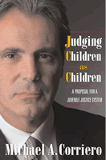

<body bgcolor="#FFFFFF" text="#000000" link="#0000FF" vlink="#CC0000" alink="#CC0000"><center><hr width="350" size="1" align="center" noshade>An innovative judge proposes a better way to discipline young lawbreakers<hr width="350" size="1" align="center" noshade><p><a href="https://cdcshoppingcart.uchicago.edu/Cart/ChicagoBook.aspx?ISBN=9781592131686&&PRESS=temple" target="_top">Buy this book!</a> | <a href="https://cdcshoppingcart.uchicago.edu/Cart/Cart.aspx?PRESS=temple" target="_top">View Cart</a> | <a href="https://cdcshoppingcart.uchicago.edu/Cart/Cart.aspx?PRESS=temple" target="_top">Check Out</a></p><p></p></center><!--none//--><h1>Judging Children as Children</h1>
<H2>A Proposal for a Juvenile Justice System</H2>
<h3>Michael A. Corriero</h3>
<P>cloth 1-59213-168-9 $70.50, Aug 06, <FONT COLOR=#990033>Available</FONT>
<br>paper 1-59213-169-7 $26.95, <FONT COLOR=#990033>Available</FONT>
<br>Electronic Book 1-59213-784-9 $26.95 <FONT COLOR=#990033>Available</FONT>
<BR> 232 pp
5.5x8.25
</P><BLOCKQUOTE><I>"How can we hold adolescents accountable as adults in adult courts for not exercising a level of maturity that they are not physically, emotionally, or intellectually expected to possess? ... America and its children deserve a system of justice that not only holds children accountable for their behavior, but also protects and nurtures those who can learn from their mistakes."</i>
<br>&#151;<b>From the Prologue</b><i></I></BLOCKQUOTE>
<p>At a time when America's court system increasingly tries juvenile offenders as adults, Michael Corriero draws directly from his experience as the founding judge of a special juvenile court to propose a new approach to dealing with youthful offenders.
<p>Since 1992, Judge Corriero has presided over the Manhattan Youth Part, a New York City court specifically designed to discipline teenage offenders. Its guiding principles, clearly laid out in this book, are that children are developmentally different from adults and that a judge can be a formidable force in shaping the lives of children who appear in court.
<p><i>Judging Children as Children</i> makes a compelling argument for a better system of justice that recognizes the mental, emotional, and physical abilities of young people and provides them with an opportunity to be rehabilitated as productive members of society instead of being locked up in prisons.
<BR>&nbsp;<h2>Excerpt</h2><P>Excerpt available at <a href="http://www.temple.edu/tempress">www.temple.edu/tempress</a></p>
<BR>&nbsp;<h2>Reviews</h2>
<p><i>"Corriero employs his experience to good effect in outlining the challenges of balancing society's interest in being safe with the desire to avoid transforming a youthful offender into a career criminal."</i>
<br>&#151;<b><i>Publishers Weekly</i></b>
<p><i>"One page and you'll be hooked. Michael Corriero knows his subject, from his own childhood to his 25 years as a judge. This personal account infuriates, saddens, and ultimately teaches&#151;how we can fix our courts so they help more than they hurt the young people who come before them."</i>
<br>&#151;<b>Peter Edelman</b>, Professor, Georgetown University Law Center, and former Director, New York State Division for Youth
<p><i>"Judge Corriero's </i>Judging Children as Children<i> combines a scholar's thoroughness with the unique insights of a judge trying children in adult court. He rails against the stark failures of our current juvenile and criminal justice systems in handling troubled adolescents, but then he pushes us to pursue a hybrid justice system which would both improve childrens' lives </i>and<i> keep our communities safer."</i>
<br>&#151;<b>Victor Streib</b>, Law Professor, Ohio Northern University, Co-Chair of ABA Juvenile Justice Committee, and author of <i>Death Penalty for Juveniles</i>
<p><i>"As a nation, we should by now know what justice means for children, and we don't. From a place of real wisdom and compassion, Michael A. Corriero makes an eloquent case for its realization. His book is a plea for the deepest meaning of 'the public good.'"</i>
<br>&#151;<b>Adrian Nicole LeBlanc</b>, author of <i>Random Family: Love, Drugs, Trouble and Coming of Age in the Bronx</i>
<p><i>"</i>Judging Children as Children<i> draws on the years Michael Corriero has presided over kids society finds hardest to love&#151;those 13 and older accused of everything from murder to armed robbery. His groundbreaking Manhattan courtroom has proved to be a national model for steering troubled kids away from careers in crime. With legal rigor and an ear for a good story, the judge culls from this experience to argue for a new juvenile justice system, one that allows judges more discretion to treat children as children."</i>
<br>&#151;<b>LynNell Hancock</b>, author and associate professor at Columbia University Graduate School of Journalism
<p><i>"Offering a model for applying his personal convictions, Corriero proposes that all court systems have a youth division within the criminal courts to address issues specifically related to youths charged with adult crimes. He advocates a model that identifies violent youths and dispositions that focus on educating offenders, and he calls for no less than a reversal of trends in criminal justice and get-tough attitudes, which vary from state to state. He intersperses sociological studies with vignettes from his own court in this cogent argument and appeal for changes in how youths are treated in criminal cases."</i>
<br>&#151;<b><i>Booklist</i></b>
<p><i>"The book reveals Judge Corriero’s passion for justice and due process through his daily experiences, supported by extensive research; it is both personal and academic, instructive and moving. It is political and philosophical."</i>
<br>&#151;<b><i>The New York Law Journal</i></b>
<p><i>"The judge sensibly states that traditional American views of the value and place of children in society are being disregarded in spite of scholarly research by behavioral scientists...The book ought to be given to our legislators and new governor to begin the process of change."</i>
<br>&#151;<b><i>The East Hampton Star</i></b>
<p><i>"</i>Judging Children as Children<i> is highly readable as an enthralling look at how a judge works, as well as a reference volume for those interested in juvenile justice. It is well written and timely. It accurately captures the no-nonsense approach of this judge as well as his huge heart."</i>
<br>&#151;<b><i>Child & Adolescent Psychiatry</i></b>
<BR>&nbsp;<h2>Contents</h2><P>
Preface vii
<br>Acknowledgments ix
<br>Prologue xiii
<br>
1. The Proposition 1
<br>
2. The Nature of Adolescence 20
<br>
3. The Criminal Responsibility of Juveniles 35
<br>
4. Sentencing Children Tried in Adult Courts 46
<br>5. Our Hardest-to-Love Children 64
<br>6. Interactive Justice 78
<br>7. Fridays in the Youth Part 92<br>
<i>Caroline Joy DeBrovner</i>
<br>
8. The Experiment that Failed 127
<br>9. Creation of the Youth Part 144
</P><BR>&nbsp;<H2>About the Author(s)</H2>
<P><b>Michael A. Corriero</b> is a Judge of the New York State Court of Claims, and he sits by designation in New York City's Supreme Court and is the Presiding Judge of Manhattan's Youth Part.</P>
<BR><H2>Subject Categories</H2>
<p><A HREF="/tempress/law.html" TARGET="_top">Law and Criminology</a>
<BR><A HREF="/tempress/political.html" TARGET="_top">Political Science and Public Policy</a>
<BR><A HREF="/tempress/education.html" TARGET="_top">Education</a>
</p>
<p align="center"><a href="https://cdcshoppingcart.uchicago.edu/Cart/ChicagoBook.aspx?ISBN=9781592131686&&PRESS=temple" target="_top">Buy this book!</a> | <a href="https://cdcshoppingcart.uchicago.edu/Cart/Cart.aspx?PRESS=temple" target="_top">View Cart</a> | <a href="https://cdcshoppingcart.uchicago.edu/Cart/Cart.aspx?PRESS=temple" target="_top">Check Out</a></p><p><font face="Arial" size="1"><a href="copyright.html" onMouseOver="window.status='Web Copyright Policy';return true;" onMouseOut="window.status=''" title="Web Copyright Policy">&copy;</a> 2015 <a href="http://www.temple.edu" target="new" onMouseOver="window.status='Link to Temple University home page';return true;" onMouseOut="window.status=''" title="Link to Temple University home page">Temple University</a>. All Rights Reserved. http://www.temple.edu/tempress/titles/1730_reg.html</font></p>